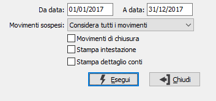

Stampa prospetto del reddito
Il programma riepiloga il conto economico secondo le modalità previste dal quadro RE – Redditi di lavoro autonomo del Modello Unico per le Persone fisiche oppure dal quadro RG – Redditi di impresa in regime di contabilità semplificata; l'elaborazione dei valori avviene tramite l'associazione dei sottoconti/clienti/fornitori, effettuata tramite i relativi programmi di manutenzione, alle voci del prospetto redditi.

DA DATA: Indicare la data dalla quale si desidera iniziare l’elaborazione del prospetto. Viene proposta la data di inizio dell'esercizio corrente.
A DATA: Indicare la data alla quale si desidera terminare l’elaborazione del prospetto. Viene proposta la data di fine dell'esercizio corrente.
MOVIMENTI SOSPESI: definisce se e come devono essere considerati i movimenti sospesi. Valori ammessi: Considera tutti i movimenti; Escludi i movimenti sospesi; Considera solo i movimenti sospesi.
MOVIMENTI DI CHIUSURA: check box per definire i criteri di trattamento dei movimenti di chiusura effettuati con l’apposita causale, al fine di ottenere un prospetto significativo anche dopo le chiusure. Ha senso in caso di ristampa prospetti di esercizi precedenti già chiusi. Valori possibili:
vuoto = non vengono considerati i movimenti di chiusura relativi all'esercizio al quale si riferisce il primo limite di data;
spunta = vengono considerati i movimenti di chiusura relativi all'esercizio al quale si riferisce il primo limite di data.
STAMPA INTESTAZIONE: indica se deve essere stampata come prima pagina del report una pagina contenente tutte le informazioni inerenti i criteri di selezione specificati per il report stesso (casella con segno di spunta).
STAMPA DETTAGLIO CONTI: consente di stampare un report aggiuntivo con il dettaglio dei conti contenuti in ogni singola voce del prospetto (casella con segno di spunta).
La pressione del bottone Esegui determina l’esecuzione della stampa.